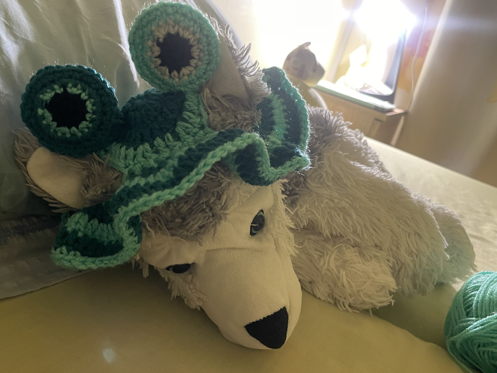
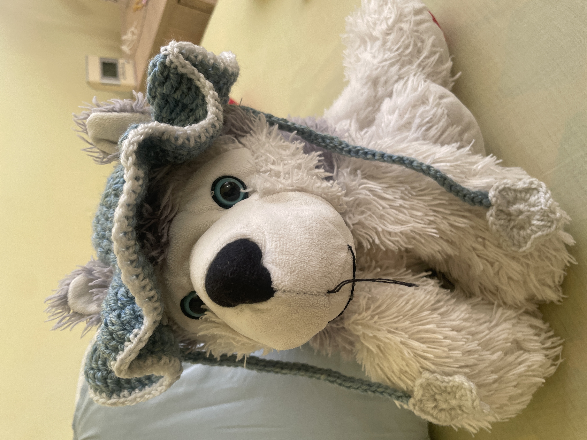

Work 1 - Notebook/iPad case

- This is used for a notebook case or iPad case.
- The motifs shown in this image are the moon.
Work 2 - Hat for the plushy dog
- This is a hat for my lovely plushy dog!
- Having eyes on the top, like a frog.
Work 3 - Hat for the plushy dog 2
- This is also a hat for my plushy.
- It has ties to make a bow.